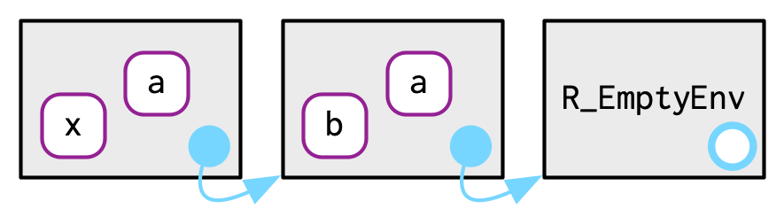
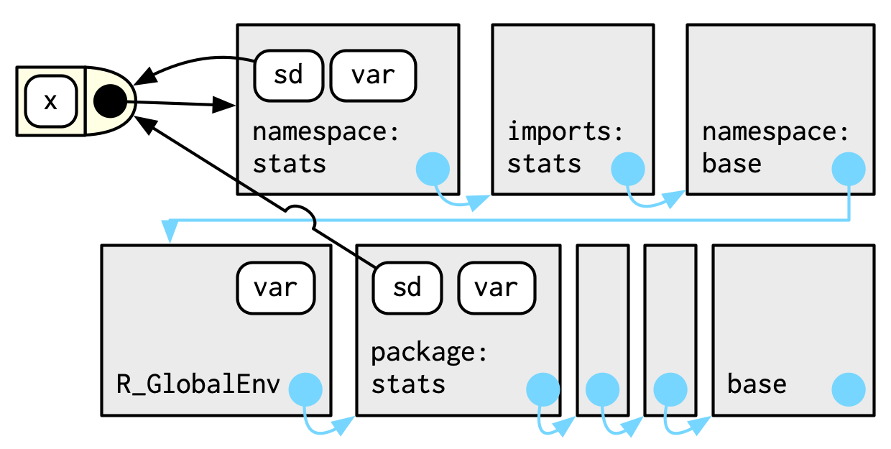
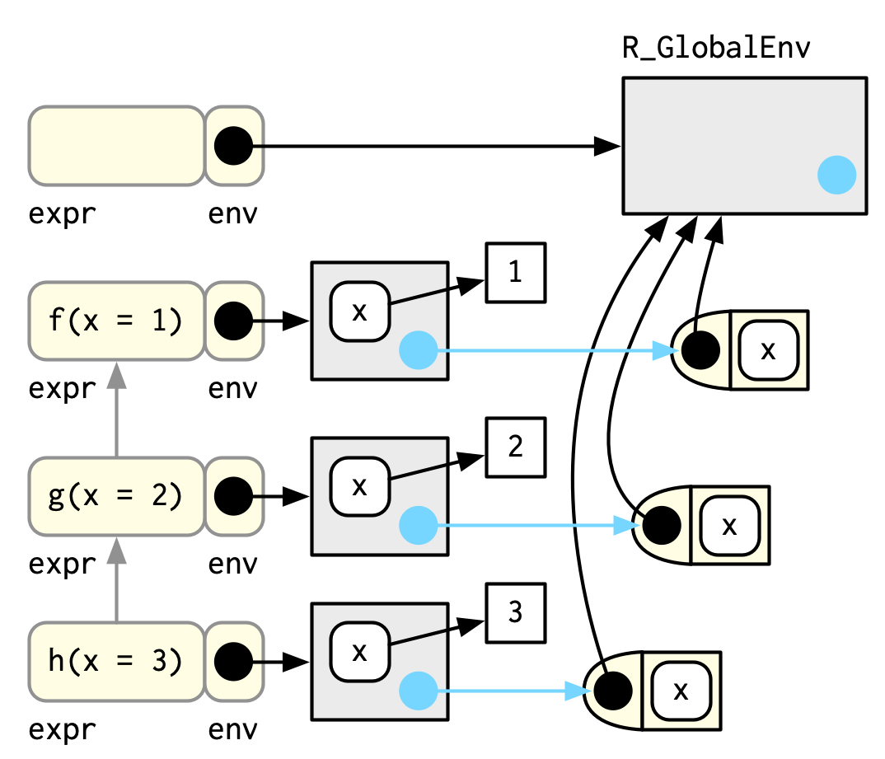

library(rlang)7 Environments
Introduction
环境(enviroment, Env)是赋予作用域(scoping)能力的数据结构。本章会详细地介绍环境的数据结构，来提高对于作用域的理解。
Outline
- 7.2节介绍环境的基本属性及如何创建一个自己的环境。
- 7.3节通过一个模板函数，介绍与环境进行交互的方法。
- 7.4节介绍4种特殊环境：R包环境，函数环境，函数执行换行，命名空间。
- 7.5节介绍调用环境（caller）。
- 7.6节简单讨论如何使用环境这一数据结构来解决一些特定问题。
Prerequisites
本章将使用 rlang 中的函数来处理环境。
rlang中的env_*()函数被设计用来在工作流中使用。所有的函数都接收一个环境作为参数，大多数会返回一个环境。
Environment basics
环境与有name属性的list很相似，但是有4点差异：
- 要求name唯一。
- name不会被排序，即无法使用顺序来提取环境中的变量。
- 赋值
NULL时，环境会更改变量值，而不是删除变量。 - 被修改时不会在内存中复制。
Basics
使用rlang::env()创建一个环境，与list类似，接收一个键值对集合。base::new.env()函数也可以创建环境，但是不能直接传递键值对集合，需要使用$<-赋值。
e1 <- env(
a = FALSE,
b = "a",
c = 2.3,
d = 1:3,
)
e2 <- new.env()
e2$a <- FALSE
e2$b <- "a"
e2$c <- 2.3
e2$d <- 1:3
identical(e1, e2)
#> [1] FALSE
环境具有引用语义：与大多数R对象不同，当你修改环境时，你是在原地修改它们，而不是创建副本。一个重要的含义是，环境可以自我包含。
e1$d <- e1
在终端中直接运行环境仅会显示内存地址，使用env_print()可以打印更多环境信息，也可以使用env_names()直接输出目前环境中绑定过的变量名。
e1
#> <environment: 0x6403411bf7c0>
env_print(e1)
#> <environment: 0x6403411bf7c0>
#> Parent: <environment: global>
#> Bindings:
#> • a: <lgl>
#> • b: <chr>
#> • c: <dbl>
#> • d: <env>
env_names(e1)
#> [1] "a" "b" "c" "d"Important environments
这里介绍两个特殊环境，更多特殊的环境会在之后详细讲到：
全局环境：就是当前交互终端的环境，
global_env()或globalenv()获取。当前环境：当前执行代码的环境，
current_env()或environment()获取，如果在终端中执行，那么等于全局环境。
使用identical()判断两个环境是否相等，不能使用==，因为环境不是atomic或list类型。
identical(global_env(), current_env())
#> [1] TRUE
global_env() == current_env()
#> Error in global_env() == current_env(): comparison (==) is possible only for atomic and list typesParents
使用env()创建环境时，提供一个没有name的参数即可设定环境的父环境。使用env_parent()或parent.env可以查看父环境。
e2a <- env(d = 4, e = 5)
e2b <- env(e2a, a = 1, b = 2, c = 3)
env_parent(e2b)
#> <environment: 0x64033f224f70>
parent.env(e2b)
#> <environment: 0x64033f224f70>
env_parent(e2a)
#> <environment: R_GlobalEnv>
parent.env(e2a)
#> <environment: R_GlobalEnv>
每个环境都有父环境，除了空环境（empty environment）。使用env_parents()可以查看所有父环境，空环境是根环境。
e2c <- env(empty_env(), d = 4, e = 5)
e2d <- env(e2c, a = 1, b = 2, c = 3)
env_parents(e2b)
#> [[1]] <env: 0x64033f224f70>
#> [[2]] $ <env: global>
env_parents(e2d)
#> [[1]] <env: 0x64033ce3bbd8>
#> [[2]] $ <env: empty>
env_parents()通常只返回到全局环境。设置last = empty_env()可以返回所有父环境。
env_parents(e2b, last = empty_env())
#> [[1]] <env: 0x64033f224f70>
#> [[2]] $ <env: global>
#> [[3]] $ <env: package:rlang>
#> [[4]] $ <env: package:stats>
#> [[5]] $ <env: package:graphics>
#> [[6]] $ <env: package:grDevices>
#> [[7]] $ <env: package:datasets>
#> [[8]] $ <env: renv:shims>
#> [[9]] $ <env: package:utils>
#> [[10]] $ <env: package:methods>
#> [[11]] $ <env: Autoloads>
#> [[12]] $ <env: package:base>
#> [[13]] $ <env: empty>Super assignment, <<-
常规赋值<-会在当前环境中创建变量。超赋值<<-从不会在当前环境中创建变量，只是会修改变量，当前环境中没有就依次在父环境中搜索，直到全局环境。如果全局环境中也没有这个变量，就会在全局环境中创建这个变量。
x <- 0
f <- function() {
x <<- 1
}
f()
x
#> [1] 1Getting and setting
获取环境中的变量方法有$，[[，env_get()。
e3 <- env(x = 1, y = 2)
e3$x
#> [1] 1
e3$z <- 3
e3[["z"]]
#> [1] 3
env_get(e3, "z")
#> [1] 3需要注意的是：[[不适用于数字索引，也不可以使用[。
e3[[1]]
#> Error in e3[[1]]: wrong arguments for subsetting an environment
e3[c("x", "y")]
#> Error in e3[c("x", "y")]: object of type 'environment' is not subsettable变量不存在时，$，[[会返回NULL，但NULL在环境中有实际意义。 env_get()会返回错误，env_get()设置参数default后，可以给定默认值而不报错。
e3$xyz
#> NULL
env_get(e3, "xyz")
#> Error in `env_get()`:
#> ! Can't find `xyz` in environment.
env_get(e3, "xyz", default = NA)
#> [1] NArlang包还提供两种额外的设定变量值的方法：
env_poke()：只设置一个变量。env_bind()：设置多个变量。
env_poke(e3, "a", 100)
e3$a
#> [1] 100
env_bind(e3, a = 10, b = 20)
env_names(e3)
#> [1] "x" "y" "z" "a" "b"与list不同，当设置变量值为NULL时，并不会移除这个变量，而是实际有一个变量指向了NULL。env_has()可以用来检测环境中是否存在某个变量。env_unbind()会真实地解绑一个变量。
e3$a <- NULL
env_has(e3, "a")
#> a
#> TRUE
env_unbind(e3, "a")
env_has(e3, "a")
#> a
#> FALSE需要注意地是：env_unbind()不会删除变量，只是解绑变量与值的关系，删除变量是gc()的任务。在R base中存在功能与上述类似的函数：get()，assign()，exists()，rm()，这些函数被设计用来在当前环境中工作，其他环境中会略显不足。
Advanced bindings
env_bind()函数有两个变体：
env_bind_lazy()可以创建延迟绑定。在首次绑定前会先运行导致延迟的代码，然后再绑定。延迟绑定主要应用于R包中的autoload()，预先将数据集加载到内存中。
env_bind_lazy(current_env(), b = {
Sys.sleep(1)
1
})
system.time(print(b))
#> [1] 1
#> user system elapsed
#> 0 0 1
system.time(print(b))
#> [1] 1
#> user system elapsed
#> 0 0 0env_bind_active()可以创建实时绑定，每次重新绑定值。
env_bind_active(current_env(), z1 = function(val) runif(1))
z1
#> [1] 0.08075014
z1
#> [1] 0.834333更多见?delayedAssign()和?makeActiveBinding()。
Recursing over environments
由于每个环境都会有一个父环境，可以利用这一特点，递归遍历环境，执行某些操作。下面是一个用来递归找到变量函数——where()的实现。
where <- function(name, env = caller_env()) {
if (identical(env, empty_env())) {
# Base case
stop("Can't find ", name, call. = FALSE)
} else if (env_has(env, name)) {
# Success case
env
} else {
# Recursive case
where(name, env_parent(env))
}
}- 首先判断是否是
empty_env()，如果是则返回“找不到变量”，如果不是 - 则判断当前环境是否包含这个变量，如果有则返回当前环境，如果没有
- 则递归查询父环境。
where("yyy")
#> Error: Can't find yyy
x <- 5
where("x")
#> <environment: R_GlobalEnv>
where("mean")
#> <environment: base>用一幅图来展示上面的逻辑，想象下面两个环境：
e4a <- env(empty_env(), a = 1, b = 2)
e4a
#> <environment: 0x64033f466d88>
e4b <- env(e4a, x = 10, a = 11)
e4b
#> <environment: 0x64033f3ce898>
where("a", e4b)的结果是e4b。where("b", e4b)的结果是e4a。where("c", e4b)的结果是error。
where("a", e4b)
#> <environment: 0x64033f3ce898>
where("b", e4b)
#> <environment: 0x64033f466d88>
where("c", e4b)
#> Error: Can't find c总结这种递归查询环境的逻辑如下：
f <- function(..., env = caller_env()) {
if (identical(env, empty_env())) {
# base case
} else if (success) {
# success case
} else {
# recursive case
f(..., env = env_parent(env))
}
}Iteration versus recursion
使用while循环改写上面的函数：
f2 <- function(..., env = caller_env()) {
while (!identical(env, empty_env())) {
if (success) {
# success case
return()
}
# inspect parent
env <- env_parent(env)
}
# base case
}Special environments
许多环境是由R自行创建，例如：包环境，函数环境等，本节介绍四种特殊的环境——包环境，函数环境，函数运行环境，命名空间。
Package environments and the search path
每次使用library()或require()时，都会将包环境变成全局环境的父环境，最先加载的包环境是后加载包环境的父环境。


这些环境的关系也被称作搜索路径。你可以使用base::search()或rlang::search_envs()查看搜索路径。搜索路径的最后两个环境是固定的——Autoloads和base。
search()
#> [1] ".GlobalEnv" "package:rlang" "package:stats"
#> [4] "package:graphics" "package:grDevices" "package:datasets"
#> [7] "renv:shims" "package:utils" "package:methods"
#> [10] "Autoloads" "package:base"
search_envs()
#> [[1]] $ <env: global>
#> [[2]] $ <env: package:rlang>
#> [[3]] $ <env: package:stats>
#> [[4]] $ <env: package:graphics>
#> [[5]] $ <env: package:grDevices>
#> [[6]] $ <env: package:datasets>
#> [[7]] $ <env: renv:shims>
#> [[8]] $ <env: package:utils>
#> [[9]] $ <env: package:methods>
#> [[10]] $ <env: Autoloads>
#> [[11]] $ <env: package:base>The function environment
函数在被创建时，会自动绑定当前环境，这个环境被称作函数环境。函数与函数环境一起构成了“闭包”。
使用rlang::fn_env()或base::environment()可以查看函数环境。
y <- 1
f <- function(x) x + y
fn_env(f)
#> <environment: R_GlobalEnv>
environment(f)
#> <environment: R_GlobalEnv>
上面的例子中，函数f()的函数环境是当前环境，其绑定的变量f在当前环境中。但实际上，这两种情况的环境并不总是相同。例如下面的例子，函数g()的函数环境是当前环境，但其绑定的变量g在环境e中。这两种的区别在于，前者定义了函数g如何寻找参数变量，后者定义了如何寻找函数g。（将e环境视作包环境，是不是更容易理解？）
e <- env()
e$g <- function(x) x
Execution environments
运行下面的函数，第一次，第二次，第n次的结果会怎样？
g <- function(x) {
if (!env_has(current_env(), "a")) {
message("Defining a")
a <- 1
} else {
a <- a + 1
}
a
}g(10)
#> [1] 1
g(10)
#> [1] 1结果如上所示，每次的运行结果都相同。这是因为函数的执行环境在每次运行结束后，都会被清除，然后重新创建一个。它的父环境是函数环境。
下面是一个各个环境之间关系的示意图：上面灰色方框表示执行环境，淡黄色框表示函数，右侧灰色框表示函数环境。
h <- function(x) {
# 1.
a <- 2 # 2.
x + a
}
y <- h(1) # 3.
有些方法可以将执行环境保存下来。
第一种就是直接返回：
h2 <- function(x) {
a <- x * 2
current_env()
}
e <- h2(x = 10)
env_print(e)
#> <environment: 0x640342ee8650>
#> Parent: <environment: global>
#> Bindings:
#> • a: <dbl>
#> • x: <dbl>另一种是将执行环境绑定到某个对象上，例如函数，成为函数环境：
plus <- function(x) {
function(y) x + y
}
plus_one <- plus(1)
plus_one
#> function (y)
#> x + y
#> <environment: 0x6403442ad710>
plus_one(2)
#> [1] 3
Namespaces
命名空间规定了R包中的函数如何正确找到自己引用的函数。而不会因为前面加载的R包导致引用错误。
例如下面的sd()函数：通过命名空间namespace指定var()函数来自于stats包。
sd
#> function (x, na.rm = FALSE)
#> sqrt(var(if (is.vector(x) || is.factor(x)) x else as.double(x),
#> na.rm = na.rm))
#> <bytecode: 0x64034413dfb8>
#> <environment: namespace:stats>R包中的函数都绑定一对环境——R包环境与命名空间。
- R包环境：针对使用者（user），告诉使用者如何引用函数。
- 命名空间：针对R包自己，告诉R包中的函数如何引用其他函数。
命名空间中的函数名集合包含R包环境中的，那些存在命名空间，但不存在R包环境中的函数，就是R包未导出的函数。

前面说过，每个环境都有一个父环境。同样，每个命名空间环境都有一套相同的父环境：
- 都有一个
imports环境，定义了所有被R包使用的函数。R包开发者可以通过NAMESPACE文件来定义这个环境。 imports环境的父环境是base包的命名空间。base包的命名空间的父环境是全局环境R_GlobalEnv。

最终父环境是全局环境，这一规则由于历史原因存在。按道理将不应该存在这一规则，因为这会导致在命名空间中不存在某个函数时，R会自动搜索全局环境。鉴于此，R CMD check会检查这种行为，并警告。
将上述所有环境整合到一起，得到：

函数和命名空间环境之间的绑定，是在加载R包时，因为创建了函数，触发创建函数环境导致的。也就是说，R包中函数的函数环境就是命名空间。
Call stacks
最后一个特殊的环境是调用环境，可以通过rlang::caller_env()或base::parent.frame()查看。所谓调用环境就是调用函数的环境，如果你在函数A中调用函数B，那么B的调用环境就是函数A的函数环境。
caller_env()
#> <environment: 0x640343382178>
parent.frame()
#> <environment: 0x640343341cc0>Simple call stacks
函数之间的调用，会形成调用栈。下面是一个简单的函数调用栈。
f <- function(x) {
g(x = 2)
}
g <- function(x) {
h(x = 3)
}
h <- function(x) {
stop()
}使用traceback()可以查看调用栈。
f(x = 1)
#> Error in h(x = 3):
traceback()
#> No traceback available除了搭配stop() + traceback()，也可以使用lobstr::cst()直接查看调用栈。二者不同点在于栈的顺序相反。
h <- function(x) {
lobstr::cst()
}
f(x = 1)
#> ▆
#> 1. └─global f(x = 1)
#> 2. └─global g(x = 2)
#> 3. └─global h(x = 3)
#> 4. └─lobstr::cst()Lazy evaluation
当函数的参数是函数返回值时，会触发延迟评估。调用栈会首先显示外层的调用，再显示内层的调用。
a <- function(x) b(x)
b <- function(x) d(x)
d <- function(x) x
a(f())
#> ▆
#> 1. ├─global a(f())
#> 2. │ └─global b(x)
#> 3. │ └─global d(x)
#> 4. └─global f()
#> 5. └─global g(x = 2)
#> 6. └─global h(x = 3)
#> 7. └─lobstr::cst()Frames
调用栈的每一层都被称为frame，是一种极其重要的内部数据结构，R代码只能访问其中部分数据，篡改frame会导致R崩溃。
每个frame都三个关键点：
expr：调用的函数表达式，即在终端打印出的信息。env：通常是函数表达式的执行环境。有两个例外：全局环境的frame是全局环境，eval()函数中的环境是任意的。parent：调用栈的栈（图中灰色线）。

除此，frame还有退出机制on.exit(),return()等细节。
Dynamic scope
在调用栈中检索变量的行为被称为动态作用域（dynamic scope）。动态作用域主要用于开发有助于交互式数据分析的函数，这是第 20 章讨论的主题之一。
As data structures
环境的数据结构可以作为一种引用语义，帮助解决下面三个常见的问题：
避免大型数据的复制：在环境中，你永远也不会意外地创建副本。但是直接使用环境十分地不方便，推荐在第14章中讲到地R6类。
管理R包的状态：创建一个额外的环境，在环境中记录状态。
my_env <- new.env(parent = emptyenv())
my_env$a <- 1
get_a <- function() {
my_env$a
}
set_a <- function(value) {
old <- my_env$a
my_env$a <- value
invisible(old)
}- 哈希映射 ：环境的数据结构就是一种哈希映射，可以缩短检索时间。